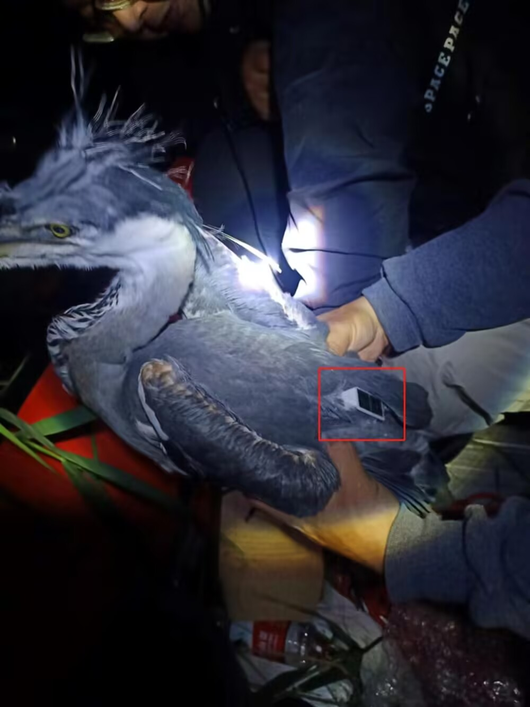
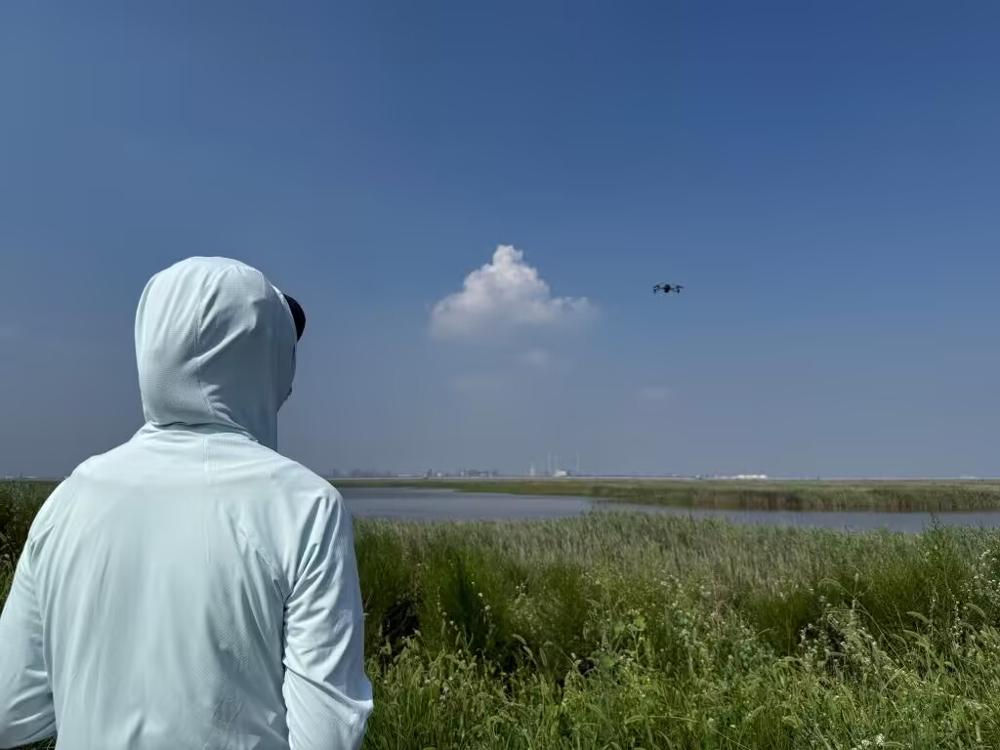
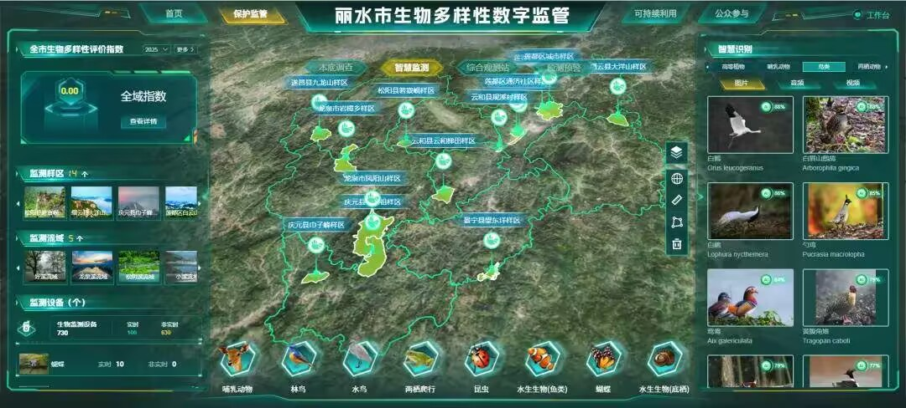

卫星追踪技术（GPS/GSM）使科研人员可以实时获取鸟类的迁徙路线、停歇点和栖息地利用模式。例如，中国科学家通过追踪器发现，东方白鹳的迁徙路线途经长江中下游多个湿地，这些关键节点亟待保护。
自动录音设备和AI识别算法可自动识别鸟鸣，全天候监测鸟类多样性，大幅降低人力成本。

无人机巡护可高效覆盖偏远地区，及时发现盗猎、火灾等威胁。结合红外热成像，夜间也能监测动物活动。
公民科学平台如eBird、中国观鸟记录中心，汇聚了数百万条观鸟数据，成为全球生物多样性监测的重要数据源。

大数据与人工智能结合，可以预测气候变化对鸟类分布的影响，指导保护区规划和修复选址。例如，基于气候模型预测，灰鹤的越冬范围可能向北迁移，需提前布局新保护地。
科技监测不仅提升了保护效率，也促进了公众科学素养的提高，让更多人参与到鸟类保护中来。
📖 参考文献：点此处 查看《Science》关于鸟类追踪技术的综述。